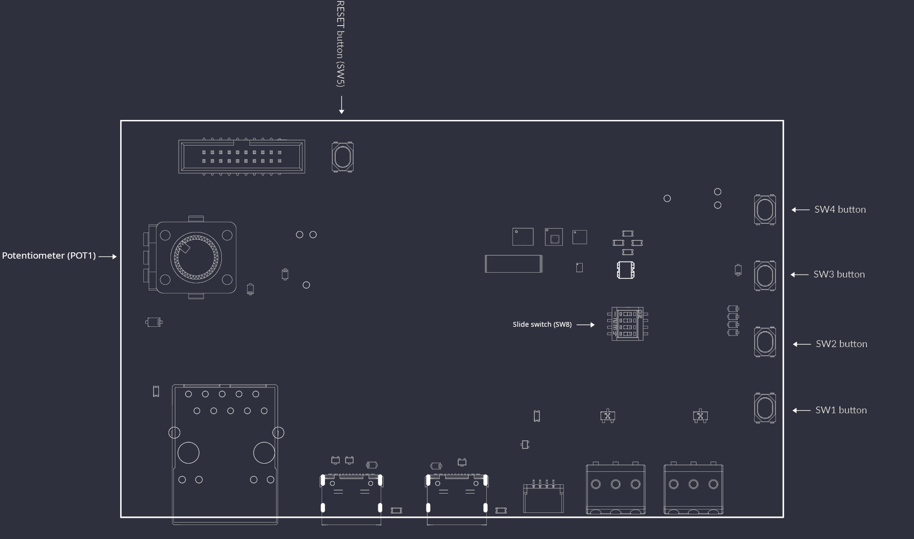
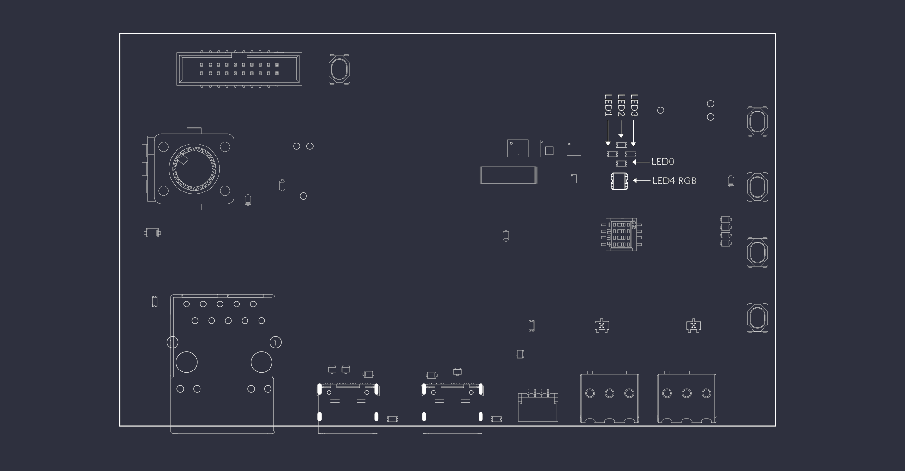
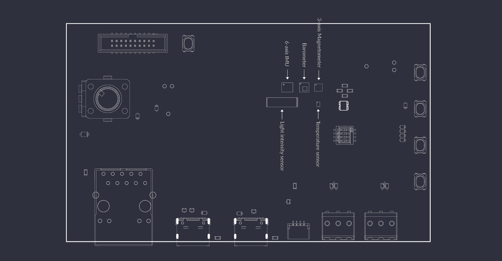
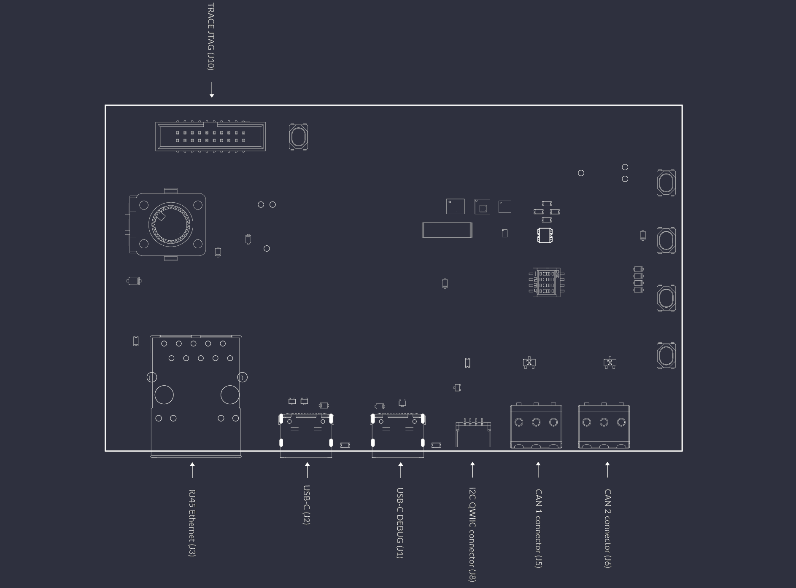
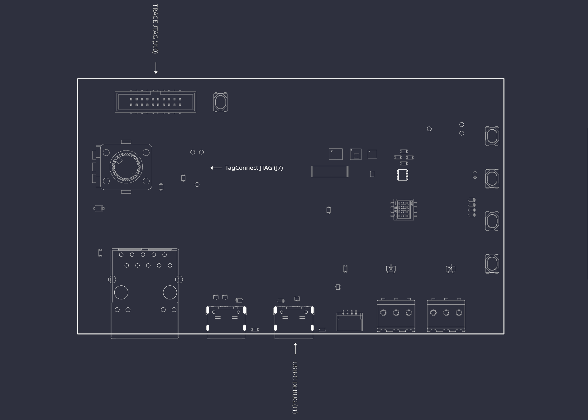

Board overview¶
The STM32H7 Renode Reference Platform is an open hardware board implementing the STM32H7 MCU family. The board design files were created in KiCad 9.x. A digital twin of the board is represented in the Renode simulation framework, allowing users to experiment with and learn how to integrate Renode into the development process.
You can find out more by visiting the portals listed below:
The Open Hardware Portal provides 3D renders, a board stackup definition, as well as an interactive preview of the board schematics and layout.
I/O map¶
Buttons, switches, potentiometers¶
The STM32H7 Renode Reference Platform features multiple buttons and switches allowing the user to interface with the MCU and other board peripherals.
4 independent user buttons -
SW1-SW4(mapped in DTS assw0-sw3)MCU reset button -
SW5CAN bus termination slide switch -
SW8User potentiometer -
POT1

User LEDs¶
The board includes multiple LEDs controlled from user space.
4 independent green LEDs -
D1-D4(mapped aspwm-led0-pwm-led3)1 RGB LED -
D5(mapped asled0-led2as 3 individual LEDs - red, green and blue)

Sensors¶
The board implements multiple sensors allowing the user to read data about the board’s behavior and state.
6-axis IMU (Acc + Gyro) -
LSM6DSO32TR-U43-axis magnetometer -
IIS2MDCTR-U3Barometer -
LPS25HBTR-U6Temperature sensor -
TMP108AIYFFR-U5Light intensity sensor -
VEML7700-U11Current sensor:
INA187A2IDBVR-U23INA228AQDGSRQ1-U24

I2C address map¶
All the sensors listed above, except for the current monitors, communicate with the STM32H7 via the I2C protocol on the i2c-0 bus. U23 is connected to an ADC input of the MCU, while U24 is reachable over I2C only through FT4232H (see Power consumption monitoring). The QWIIC expansion connector (J8) is connected to a separate bus.
The I2C addresses of the on-board sensors (7-bit) are:
LSM6DSO32TR-0x6AIIS2MDCTR-0x1ELPS25HBTR-0x5DTMP108AIYFFR-0x48VEML7700-0x10
The map below shows the addresses occupied on the i2c-0 bus.
| 0 1 2 3 4 5 6 7 8 9 A B C D E F |
--|------------------------------------------------------------------------------------|
00| -- -- -- -- -- -- -- -- -- -- -- -- -- -- -- -- |
10| 10 -- -- -- -- -- -- -- -- -- -- -- -- -- 1e -- |
20| -- -- -- -- -- -- -- -- -- -- -- -- -- -- -- -- |
30| -- -- -- -- -- -- -- -- -- -- -- -- -- -- -- -- |
40| -- -- -- -- -- -- -- -- 48 -- -- -- -- -- -- -- |
50| -- -- -- -- -- -- -- -- -- -- -- -- -- 5d -- -- |
60| -- -- -- -- -- -- -- -- -- -- 6a -- -- -- -- -- |
70| -- -- -- -- -- -- -- -- -- -- -- -- -- -- -- -- |
Connectors¶
The board implements multiple connectors allowing the user to interface with the board and attach auxiliary devices.
USB-C DEBUG -
J1USB-C user -
J2Ethernet -
J3QSPI flash access -
J4CAN bus -
J5,J6QWIIC I2C expansion -
J8Trace and JTAG -
J10

CAN bus¶
The STM32H7 Renode Reference Platform is equipped with two separate CAN FD TCAN3414DR transceivers. With SW8 you can manipulate CAN termination.
Apart from the CAN bus termination, you can also connect the two buses together to use them as a loopback interface.
For SW8 switching logic, refer to the table below. An exact connection diagram can be found in the IOs schematic sheet.
Channel number |
Channel function |
OFF |
ON |
|---|---|---|---|
1 |
CAN bus 1 termination |
Disabled |
Enabled |
2 |
CAN bus 2 termination |
Disabled |
Enabled |
3 |
CAN bus 1 to CAN bus 2 loopback |
Disabled |
Enabled |
Connecting to the CAN bus with auxiliary devices can be done with the J5 and J6 WAGO_2059 connectors. These connectors allow standard prototyping cables to be connected without any additional tools.
Note
Remember to tie GND with devices connected to the CAN bus transceivers to avoid a floating ground or unexpected ground loops.
BOOT0 switch¶
The 4th channel of the SW8 dip switch controls the BOOT0 signal. The BOOT0 pin determines the memory source from which the MCU boots after reset. When BOOT0 = OFF, it normally boots your program from Flash, and when BOOT0 = ON, it can boot the built-in System Memory bootloader.
User USB¶
The J2 USB connector is configured as an endpoint. The USB-C connector is used to connect the board to a USB host, such as a PC. It can be used for functions such as virtual COM port communication, firmware updates, or other USB device applications.
Power¶
The STM32H7 Renode Reference Platform is powered via the J1 (USB-C DEBUG) connector. Plug the board into a standard PC USB slot or power it via a USB-C charger.
Note
To power the board from the J2 (USB-C) connector instead, remove the R1 resistor and populate the R2 resistor. Both positions use 0 Ohm 0402 resistors.
Power consumption monitoring¶
The board is able to monitor its power consumption via two independent current monitors.
U23 INA187 is connected to the STM32H753 analog input and feeds information into the firmware running on the MCU.
U24 gives you the ability to read the power consumption directly from the host device via the USB-C DEBUG port, eliminating the need for external measuring devices. It can be accessed via the FT4232H channel B as an I2C device. You can follow the FTDI Guide for more information on interfacing with the I2C bus and learn more about the PyFtdi Python library from the project documentation.
Flashing¶
There are 3 options to flash firmware into the MCU.

FTDI (FT4232H)¶
The main flashing interface of the board is the FTDI FT4232H USB bridge. This chip is connected to the USB-C DEBUG port and exposes a JTAG interface for programming and debugging of the MCU.
Flashing via the FT4232H chip is described in the Flash the board chapter.
10-pin Tag-Connect¶
An alternative programming method is available via the 10-pin Tag-Connect terminal (J7). An off-the-shelf TC2050-IDC-NL Tag-Connect cable can be used with most commercially available programmers, giving developers extra flexibility when working with the STM32H7 Renode Reference Platform. We recommend using the Tag-Connect with Antmicro’s Debug Toolkit.
Note
Note that J7 is not to be confused with J4, the Tag-Connect terminal that provides access to the QSPI flash.
The J7 Tag-Connect pinout is described in the table below:
Signal name |
Pin |
Pin |
Signal name |
|---|---|---|---|
|
1 |
10 |
|
|
2 |
9 |
|
|
3 |
8 |
|
|
4 |
7 |
|
|
5 |
6 |
|
Note
Remember to supply power to the board before flashing, as the programming connector does not provide power to the device.
19-pin JTAG/SWD and Trace Connector¶
The third way to flash the STM32H753 MCU is via a standardized 19-pin JTAG/SWD and Trace Connector (J10). This type of connector is widely used in J-Trace Pro programmers. Additionally, it gives access to the trace debug interface, with 4 trace data lines exposed.
The J10 JTAG/SWD and Trace connector pinout is described in the table below:
Signal name |
Pin |
Pin |
Signal name |
|---|---|---|---|
|
1 |
2 |
|
|
3 |
4 |
|
|
5 |
6 |
|
|
7 |
8 |
|
|
9 |
10 |
|
|
11 |
12 |
|
|
13 |
14 |
|
|
15 |
16 |
|
|
17 |
18 |
|
|
19 |
20 |
|
Note
Remember to supply power to the board before flashing, as the programming connector does not provide power to the device.